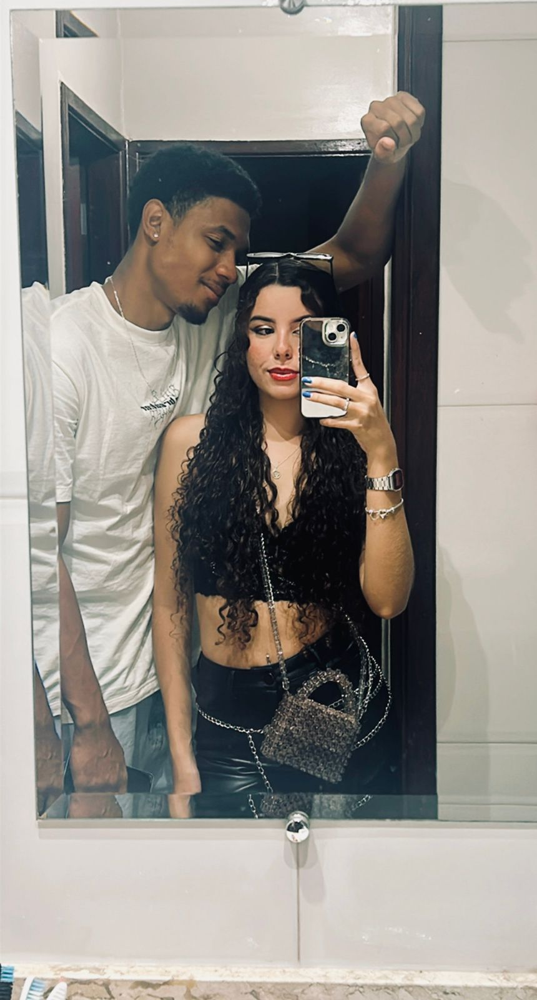
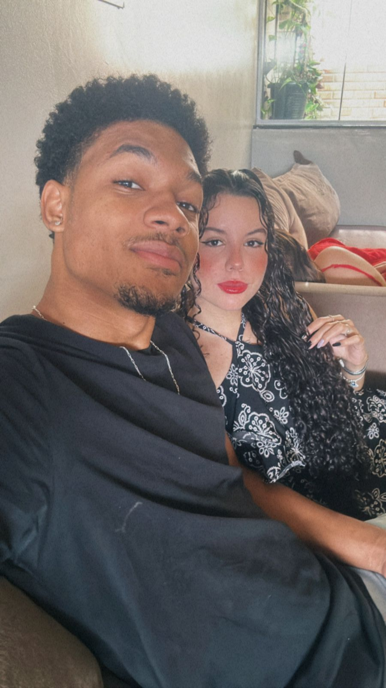
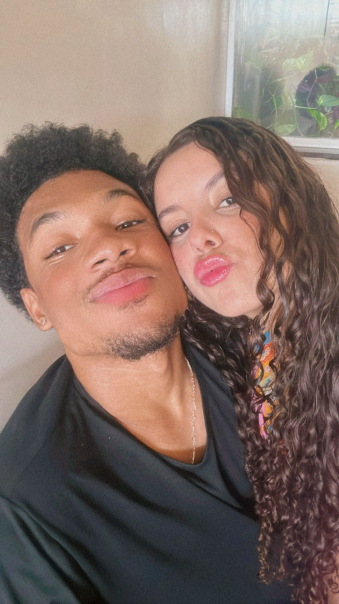
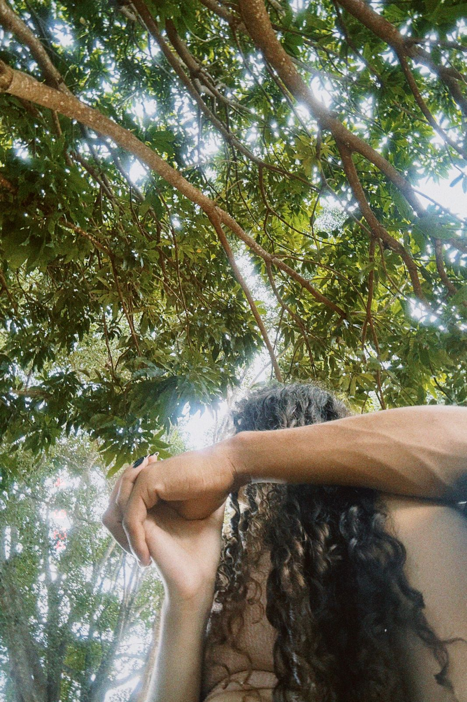
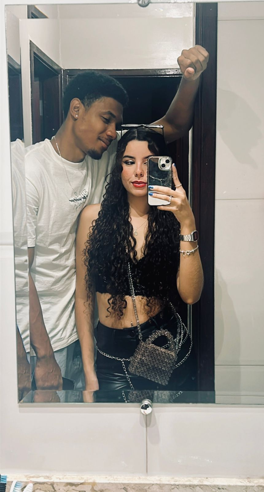
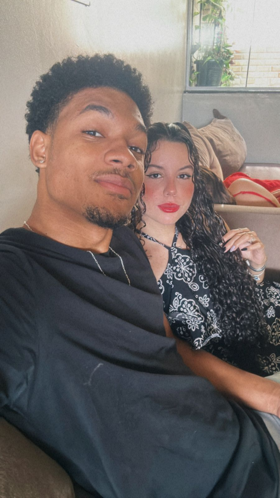
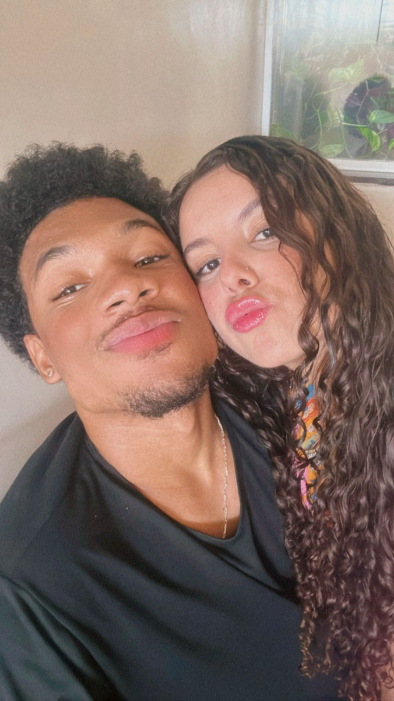
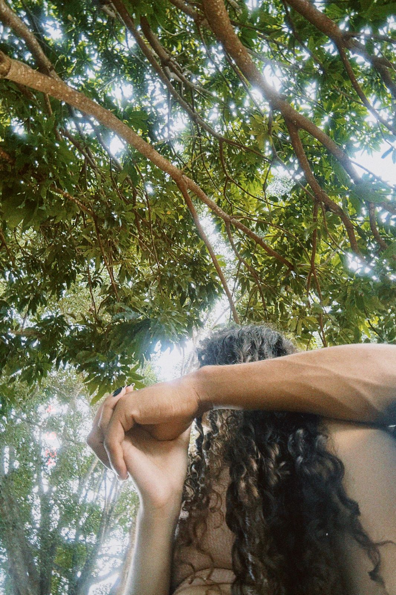

Hoje é Dia dos Namorados, mas para mim, qualquer dia ao seu lado já é especial. Ainda assim, quero aproveitar essa data para te lembrar de tudo o que você significa para mim.
Desde que você entrou na minha vida, tudo mudou. O jeito como você sorri, fala comigo, se preocupa com os detalhes e transforma qualquer momento simples em algo memorável… tudo isso me faz perceber, todos os dias, que encontrei alguém raro. Com você, eu aprendi que o amor verdadeiro não é feito só de grandes gestos, mas de pequenas atitudes que se repetem com carinho, cuidado e presença.
Amar você é uma das maiores alegrias da minha vida. Você me inspira a ser melhor, me acalma nos dias difíceis, me faz rir quando eu mais preciso e, acima de tudo, me faz sentir amado de um jeito que eu nunca imaginei.
Obrigado por ser meu parceiro, meu porto seguro e meu amor. Que a gente siga cultivando essa conexão linda com respeito, carinho, admiração e muito afeto.
Feliz Dia dos Namorados! Te amo mais do que palavras podem expressar.
 






